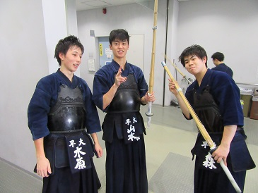
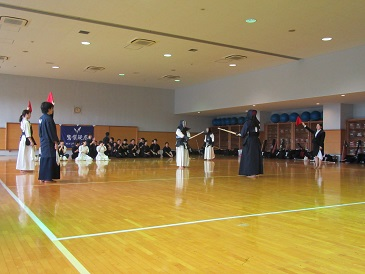
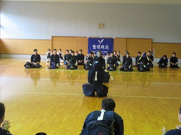
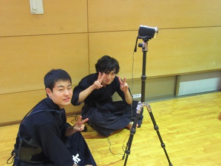
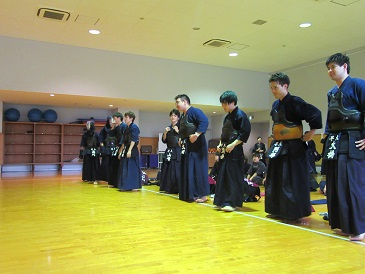
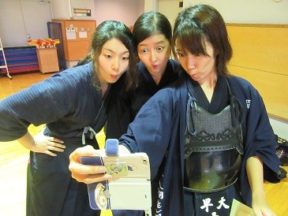

|
10月9日に明治大学和泉キャンパスで後期早明戦が行われました。今回は当会が主幹ということで 一部の後輩は朝から会場設営などを手伝っていただきました。ありがとうございました！ 当日朝はあいにくの雨でしたが白熱した試合を展開してくれました！みんなおつかれさま！ マイタンブラーとか調子乗るなよ桑原！（５５） 小池（５５）おは……ょぅ。 武田（５４・左）もカメラ向いてくれないし伊藤（５４・右）なんて… だんだん集まってきました。 しぇんぱぁ～い、撮ってくだしゃいよぉ～（アテレコ） 漢の、おにぎり。（５４・阿部） オラオラ上本（５３・左）とぱっつん篠崎（５３・右） もう少し写真たまったら彼の写真集出せそうです。（５５・持田） つらいんだろうね、なんか。（５４・前田/安藤） 雨の中、和泉の体育館へ。先輩も朝からありがとうございます。 小池・竹内（５５）の後ろ姿。写ってくれないだけです。つら。 朝からご苦労様です、主務！ やっくんおはよう（５５・八塚） 54期はもうなんかお疲れさまって感じだね。 座っててもわかる第三副将のスタイルの良さ。  学院の強い絆で結ばれた師弟。拓海（５５）髪どうした。 
野崎（５４）も朝からご苦労様。 4ポーズ。 広報の新たな敵、出現す。 ツーショット（カッコよさ重視） 間違い探し。この中に三婆がいますよ？ 同上。 なーんかはじまったぞ…… 
特にコメントなし。さらしてやる。 
なくなく優勝杯を手放す藤本（５３） ミーティング。がんばっていきましょう。 ほしがりだねぇ。垂だけのっけといてやろう。 後ろの武田が健気。 敵、再び。 さあ、いよいよはじまります！ 真剣なまなざし。 応援も勝負のうち。 よっしゃーい！  って、こらぁーーーっ！笑 女子三軍はオールフレッシュ☆１女でした。広報冥利。  続いて男子三軍。 稽古サボり魔のくせしてツキとか打ってた安藤（５４）。 まずは午前の部、お疲れ様でした！ ちょっと早いですがここでお昼です。 ５５期のお決まりポーズはこれか… これのどっちかですね。 くつろぐやっくん。 謎ショット。 最近カメラ見つけるの、みんな早すぎ。 顔は、笑ってないの。怖いよ森（５５） 水谷（５５・左）と山本拓海。特に面白く、ない。 主将の頭が、ボンバーヘッドに。 女子二軍から再開です。ファイト！ ぼく、つかれちゃったの（アテレコ） しっかり応援していきましょう。 なんか、いい写真でしょ。 カメラや記録の一年生、ご苦労様です。 しばらくずーっと副審が邪魔でした(笑) 続いて男子二軍戦。 誰かさんにカメラ任せたらいきなりこんな写真に。 さあ、いよいよ女子一軍戦です。 白熱しました。  カメラまわしてくれてありがとう。 
ピースしてないで仕事しろや。  男子も一軍戦だ。 こちらも白熱しました。 
５４期前田が無双してるぜ… コメント難しい写真撮るなよ… 大将は春日部高校対決に…。 
完全にプライベートなカメラの使い方してるな… 死にかけの主将… ブレッブレだったけど撮影者安藤おつかれ。 わー、めーつむっちゃったー（篠崎風） いや、うまく撮れてるけど、これ同好会のカメラだからな…？ なんか、広報より使いこなしてるよ… さて、集合写真です。まずは女子三軍から。セルフSNOWですって。 自撮りしてるやつら。小池の顔に注目。 
女子二軍。 女子一軍。 男子三軍。 男子二軍。 男子一軍。choo choo train。 続いて５５期。 続いて５４期。 続いて５３期。散々粘って、結局このクオリティ… そして全体写真です。  小池はリミッター外れたね。 これは広報のことを煽っているそうです。ブヒブヒィ。 物憂げな第三副将。 この写真を載せることが敵への反撃か？ 野崎（５４）の飲み会ヘアは、『君の名は。』の三葉スタイル。 （ヘアメイクアーティスト NAMI NAKAYAMA の作品） 雨の中、一日ご苦労様でした。月末の早慶戦もがんばっていきましょう！ (※写真へのコメントは全て管理人がしております。) |